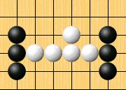

台湾五子棋教学站讲座五：禁手
#1 台湾五子棋教学站讲座五：禁手 作者：有志青年 发表时间：2011-10-9 9:17:05
当五子棋有一定程度后，大家慢慢发现先下的黑子获胜机会很大，因此为了让双方更公平，所以开始对黑子做了一些限制，演变历程如下：
最初，黑白双方无限制，但”长连”不算胜
1891年规定，禁止黑白双方走”双活三”，走出算负
1903年规定，只禁止黑方走”双活三”
1912年规定，黑方被迫走”双活三”亦算负，白方走”长连”算胜
1917年规定，黑方走”长连”亦算负
1918年规定，黑方走”四三三”亦算负
1936年规定，黑方不许走”双四”，并将19×19的棋盘改为15×15的连珠专用棋盘
1940年规定，黑方连五和禁手同时形成，算黑胜
标准规则就此成形
因此，黑棋不能下双活三、不能下双四、也不能下长连，只能靠四三来获胜，白棋除了基本攻击技巧外，还可以迫使黑下出禁手（逼禁）来取胜，大家可能会想说黑棋不下禁手就好了，但白棋怎麽逼黑棋下呢？请看之后的介绍就会明白。
也有人会想，大家一定都会想拿白棋，黑棋有那麽多限制要怎麽下呢？事实上，就算黑棋有了禁手，还是有先下的优势，这就考验黑棋如何掌握这一子的优势。下到后来慢慢会体会，禁手增加了五子棋的公平性、複杂性及趣味性，当你觉得在有禁手情况下，还是感觉黑棋比较好下时，就表示你的棋力有一定程度了。
--------------------------------------------------------------------------------
黑棋的禁手包含长连、双四、双活三，以下简单介绍
长连：
只要黑棋连线超过五子，即为禁手，若白棋长连算白胜。
四四：
黑子一子形成二个四，无论是活四或死四。
双活三：
黑子一子形成二个活三的着手，此子为两个活三的交点。
--------------------------------------------------------------------------------
禁点的判断：
记住以下原则
※只有黑棋有禁手，白棋没有限制。
※黑棋下出五同时出现禁手，则不算禁，五最大，判黑胜。
※三个三、三个四、四三三、四四三、同样为黑棋禁手。
长连：
长连是最容易判断的，不用多说，只要超过五子，六七八九子就算禁。
四四：
四四也很容易判断，简单说一下初学者常犯错误
Ａ点直的是四，横的会变长连，不能形成五，不算四，所以不是四四禁
双活三：
要判断是否一子形成二个活三，首先要了解活四和活三的定义
活四：四颗子连成一线，两边下一子皆可形成五。
活三：次一子可形成活四的三子连线（能否形成活四，是活三的判断关键）。
|
左边的Ａ～Ｅ点是常见的假三，白子不理， 其中ＡＢＣ点，若最左边的白子或黑子拿掉，则为活三， ＢＣＤＥ点因黑子想形成活四时，有一边会变成长连， |
释例：
Ａ点直的是活三，横的不是活三，会变成长连，不能形成活四，不算禁手。
Ｂ点直的是活三，横的是假三，不能形成活四，不算禁手。
Ｃ点直的是活三，横的不是，会变成长连，不能形成活四，不算禁手。

黑子虽有二个活三，但非一子形成，不算禁手。
--------------------------------------------------------------------------------
以禁解禁：
通常为判断双活三禁手时才会用到，也是最难判断的
Ｅ点是否为三三禁呢？

乍看之下，直的和斜的都是活三，但细仔一看，黑下Ｅ后
直的活三要形成活四一定要下Ｆ，但Ｆ点为四四禁点，黑不能下Ｆ，所以直的活三不能形成活四，是假三，所以Ｅ点不是三三禁。
Ｇ点是否为双三禁点，因横的三要形成活四一定要下Ｈ，但Ｈ为长连禁点，所以横的三无法形成活四，Ｇ点不是三三禁。
-----------------------------------------------
#2 Re:台湾五子棋教学站讲座五：禁手 作者：没谱的人 发表时间：2011-10-9 13:33:52
对“禁手”的文字解释略显欠缺，以四四为例：黑子一子形成二个（或二个以上能成为五）的四。